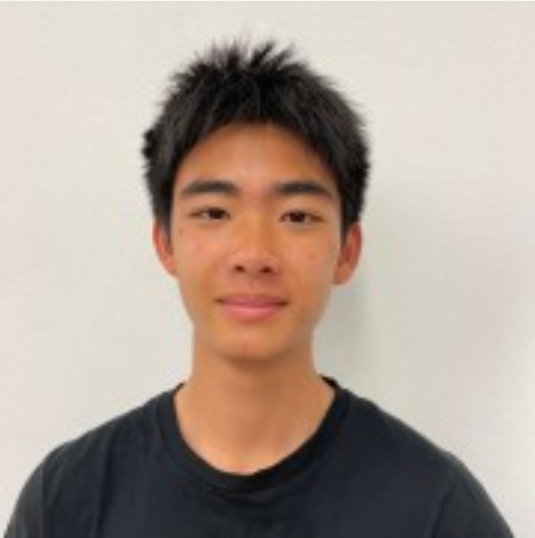
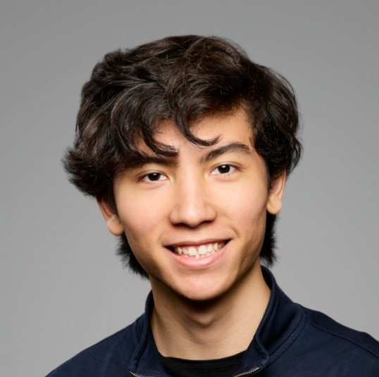
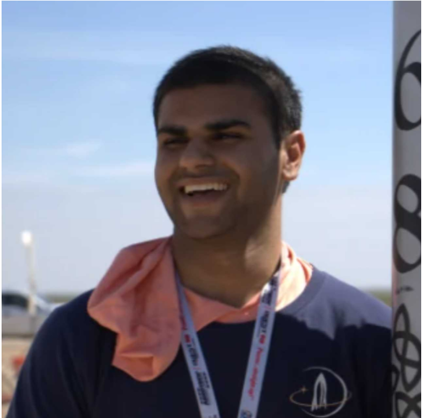
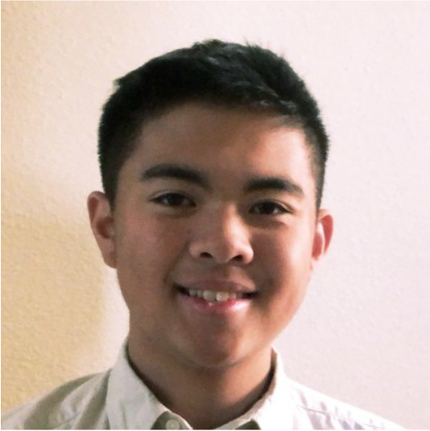
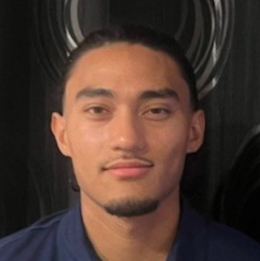

Meet The Team Members

Thomas Chang
Role: Lead Author / Robotics Engineer
Thomas is a junior Mechanical Engineering student interested in hardware design and controls for robotics.

Tim Brugarolas
Role: Navigation & Estimation
Tim is a senior EECS student. His interest in safe and robust autonomous robotics. He has worked on autonomous experimentation for metamaterial research and discovery.

Kush Mahajan
Role: Everything
Kush is a junior EECS student interested in optimal control and robotics. He has worked on developing optimal control and navigation systems used on missiles and liquid rocket engines.

Ryan Kwong
Role: Systems & Integration
Ryan is an EECS major interested in hardware design targeted for robotics. He has worked on several Raspberry-Pi controlled robotics projects as well as made articulators for a surgical table company during an internship.

Gabriel Gallo
Role: Systems & Integration
Gabe is an senior EECS student interested in robotics and hardware design. He has worked on software development projects in his free time.